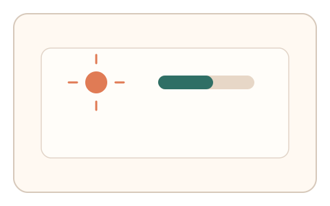
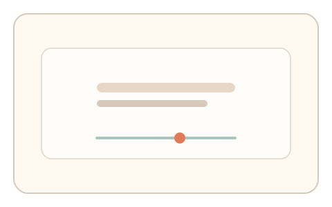
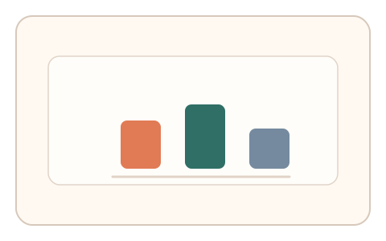

#144
F：意图/现实耦合 × 异步/随机插入（路径/预测误差）
已扩展
环境光偏移校准
读取环境光并让用户调节亮度到匹配当前环境，记录偏差与调整轨迹。
概念原文
读取环境光后要求用户调节亮度到“匹配当前环境”的主观点，系统与设备基线对比。
把“现场光照一致性”纳入验证。
研究背景
亮度知觉受到环境光适应影响，用户对“匹配当前环境”的主观校准具有稳定区间。将环境光读数与调节行为耦合，可反映真实在场与感知一致性。
核心机制
- 读取环境光传感器值作为参考。
- 用户调节屏幕亮度到“匹配环境”。
- 记录目标亮度与调整轨迹。
- 与设备基线及群体分布比对。
用户流程
- 步骤 1：系统读取环境光并显示调节界面。
- 步骤 2：用户调节亮度直到感觉匹配。
- 步骤 3：系统记录偏差与调整过程。
判定信号
环境光‑亮度匹配比值
人类对环境光的匹配存在稳定比例。
调节回弹与停顿
真实用户会出现试探与微调。
判定逻辑
匹配比值与调节轨迹需落在基线范围；过度恒定或无微调判异常。
对抗面
- 伪造环境光读数并固定亮度
- 脚本直接设置目标值
防御与缓解
- 要求短时遮挡/移开产生光照变化
- 随机化再次校准的时机
- 结合反应时与路径信号
可达性与风险
无传感器设备提供手动输入与替代任务。
- 自动亮度调整干扰校准
- 屏幕校准差异影响匹配
可视化状态

状态 1：环境光读取
展示环境光读数与校准提示。

状态 2：亮度调节
调节滑杆匹配环境光。

状态 3：偏差对比
比较匹配比值与调整轨迹。
参考资料
Ambient light sensor
说明环境光传感器与读数。
Brightness
说明亮度知觉与适应。